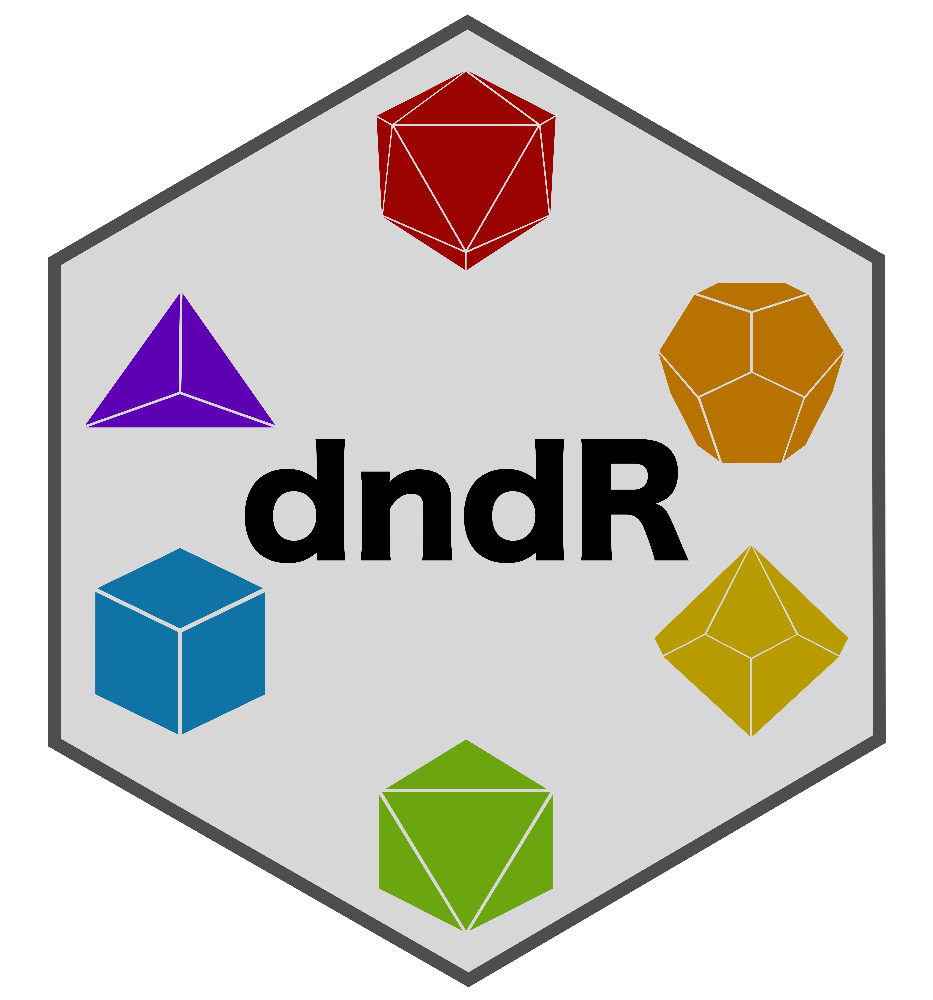

The goal of dndR is to provide a suite of Dungeons & Dragons (Fifth Edition a.k.a. “5e”) related functions to help both players and Dungeon Masters (DMs). Below are short descriptions of the functions currently included in dndR. I am always willing to expand that list though so if you have a D&D-related task that could be cool as a function, please post it as an Issue on this package’s GitHub repository!
Installation
You can install the development version of dndR from GitHub with:
# install.packages("devtools")
devtools::install_github("njlyon0/dndR")Function Descriptions
Dice Rolling
-
roll– Roll specified number of dice and sums their outcomes. Supports returning the individual die results as a message and/or re-rolling 1s via optional arguments.
Character Creation
-
pc_creator– Stat out a character of specified race and class using your preferred method of rolling ability scores- Run
dnd_races()ordnd_classes()to see which races/classes are currently supported bypc_creator
- Run
ability_scores– Roll for six ability scores using specified method (e.g., 4d6 drop lowest, 3d6, or 1d20). Agnostic to character race and/or classmod_calc– Calculate roll modifier for given ability score(s)-
pc_level_calc– Identify the current level of a player character based on earned experience points (XP). Also returns the proficiency modifier to be used at that level- Thank you to Humberto Nappo for contributing this function!
npc_creator– Pick a job and race for any number of non-player characters (NPCs). Hopefully this provides a useful starting point when describing the patrons of a tavern or the travelers players glimpse on the edge of the flickering light cast by their campfire
Creatures
creature_list– Identify all creatures that fit certain criteria (e.g., experience point value, creature type, size, etc.)creature_text– Retrieve full information and ability/action information text for specified creature(s)monster_stats– Return generic monster stat block of specified experience point (XP) value or challenge rating (CR)-
monster_creator– Generate a homebrew monster with additional immunities and vulnerabilities of specified difficulty (adjustment for these is performed automatically)- This function is inspired by Zee Bashew’s video on creating Witcher-esque homebrew monsters
cr_convert– Converts challenge rating into equivalent experience point value
Spells
spell_list– Identify all spells that fit certain criteria (e.g., spell level, school of magic, character class list, etc.)spell_text– Retrieve full information and description text for specified spell(s)
Encounters
encounter_creator– Pick set of creature experience point values that constitute a balanced encounter of specified difficulty and given party composition informationxp_pool– Identify experience point total for desired encounter difficulty at a specified player level and party sizexp_cost– Find “realized” experience point amount by applying appropriate multiplier for “raw” XP based on number of enemy creatures and party size
Visual Tools
-
party_diagram– Create aggplot2diagram of party ability scores separated either by player or by score. This plot can be useful in identifying the strengths and weaknesses of the party as a whole to help you (the DM) create encounters with that in mind- Thank you to Tim Schatto-Eckrodt for contributing this function!
-
probability_plot– Generate aggplot2plot of the frequency of roll outcomes for the specified type and number of dice. You can also specify the number of times to roll those dice to inform the plot
Contributing to dndR
If you’d like to contribute function scripts or ideas, that is more than welcome! For specific instructions check out CONTRIBUTING.md but at a glance:
For function ideas, open a Github issue
For function scripts, either open a Github issue or fork the repository and add your content to the
devfolder and submit a pull request